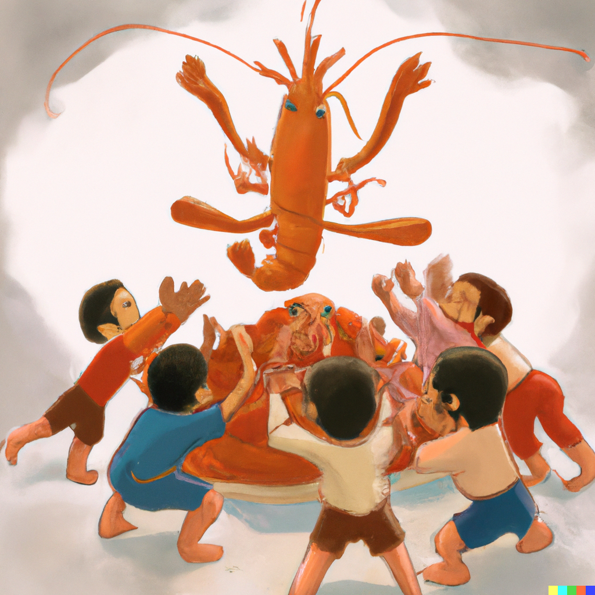

LEARN MORE ABOUT OUR MASTER!(Praise be to the shrimster!)
Behold, your eyes do not deceive you. Yes the perfect visage of manliness appears before you. Click here to learn more about our supreme beloved prophet. BEWARE! His visage alone has been known to inspire many divine blessings, such as tears of joy, spontaneous dancing, and an immense desire for shrimp.
 Peep the shrimster!
Peep the shrimster!
BEHOLD YOUR NEW FAMILY (A shrimster is allowed no other family than their shrim BROTHER-SISTERS)
Have you ever felt alone? Have you ever felt like you don't belong? Do you ever grow weary of the mundane day to day life? These, and more, are all signs of depleted levels of shrimotanium in your blood stream. You can replesh your shrim-waves(tm) by bonding in ritual consumption of shrimp with your new family. Click below to view your new family. FORGET ABOUT YOUR OLD FAMILY! STOP ASKING IF YOU CAN STILL TALK TO YOUR OLD FAMILY YOU CAN NOT THE MASTER HAS FORBIDDEN IT STOP ASKING! NOW!

Your ONLY family!
HOW DARE YOU!?
The Master has sacrificed SO MUCH to bring YOU (pathetic worm that you are) the secrets of the shrimp? He studied for YEARS to learn to talk to Shrimp and YOU don't buy ANY of the merchandise? You disgust me. Buy it now.
 Great deals!
Great deals!